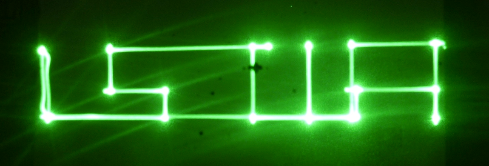
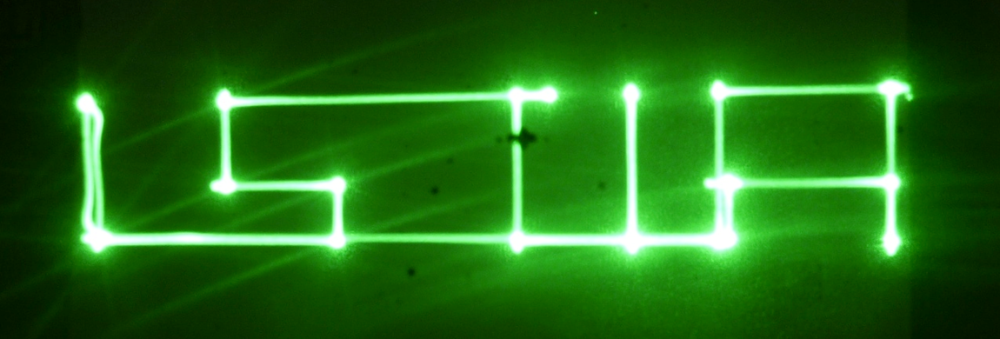

Applications mobiles et domotique
Serveur REST Node.js
Cette page est une présentation d'un projet de 5ème année à l'ISTIA réalisé par Baptiste Gauduchon et Yann Jajkiewicz, encadré par Sebastien Lagrange et Serge Tahe.
Mots clé : REST, JSON, Arduino, serveur, commande, web, TCP/IP, NodeJS.
 

Résumé
Dans le cadre de la 3ème année du cycle ingénieur de l’ISTIA, le projet réalisé est un serveur REST écris avec NodeJS permettant de lier des clients à des cartes arduino à des fins domotiques. Par URL, les clients peuvent envoyer des commandes avec paramètres au serveur afin de les envoyer à la carte souhaitée. Les cartes arduinos sont connectées au serveur via ethernet et en reçoivent les commandes. Pour réaliser cela, les fonctionnalités du serveur ont été découpées en 3 couches : une interface web pour recevoir les commandes des clients, une couche métier pour transformer les paramètres en une chaîne JSON, et une couche de communication permettant d’enregistrer les différentes cartes arduinos connectées et de leur envoyer les commandes utilisant le protocol TCP/IP. Lorsqu’une commande est reçue, la carte analyse la chaîne JSON pour récupérer les paramètres et effectuer l’action souhaitée. La carte répond alors au serveur avec une chaîne JSON qui est reconstruite et renvoyée au client. L’utilisation de la technologie NodeJS et du format JSON permettent au serveur de respecter une architecture REST tout en étant robuste et capable de gérer un grand nombre de requêtes simultanément.
Abstract
As part of the 3rd year of engineering studies at ISTIA, the completed industrial project is a REST Server written in NodeJS linking clients and arduino boards for domotic purposes. By URL, clients have to be able to pass commands with parameters to the server in order to send them to the requested board. The arduino boards are connected to the server via ethernet and receive the commands from it. To achieve that, the server’s functionalities have been split in 3 layers: a web interface to receive commands from clients, a work layer that transforms the parameters in a JSON string, and a communication layer allowing to register the different arduino boards connected and to send the commands to them using TCP/IP protocol. When receiving a command, the board analyzes the JSON string to get the parameters and performs the action required. Then the arduino board responds to the server with a JSON string which is rebuild and sent back to the web client. Using the NodeJS technology and the JSON format allows the server to respect the Representational State Transfer architecture while being robust and able to handle a large amount of simultaneous requests.